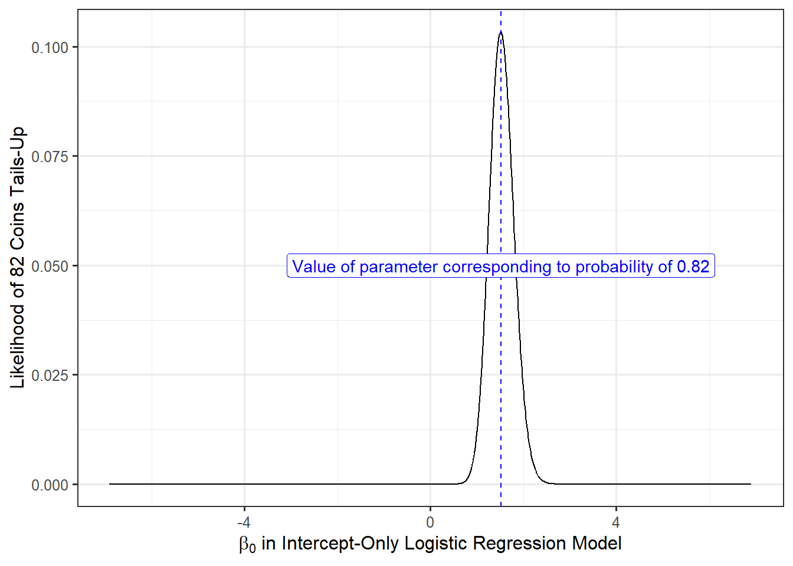

18 Logistic Regression
When the response is binary (taking one of only two values), the models we have discussed so far in this text are inappropriate. To see some of the complications, consider trying to characterize the impact of lifestyle choices on whether an individual is diagnosed with cancer. The response (is a person diagnosed with cancer, yes/no) does not readily fit into a framework such as
\[(\text{Response})_i = f\left((\text{Predictors})_i, \boldsymbol{\beta}\right) + \varepsilon_i.\]
To begin with, the left-hand side is not a number, but a categorical variable. We could potentially address this using an indicator variable:
\[(\text{Cancer Diagnosis})_i = \begin{cases} 1 & \text{if i-th subject diagnosed with cancer} \\ 0 & \text{otherwise} \end{cases};\]
we could use this indicator variable as the response. However, we now have another issue; the right-hand side of the model would need to only return either a 0 or a 1. The response will never be 0.96; as a result, the idea of \(\varepsilon_i\) being errors that “jitter” the observed response from some overall mean response is no longer reasonable.
Recall that in developing our approach to nonlinear models, we specifically did not consider the “signal plus noise” approach and instead chose to specify a semiparametric model (Definition 16.2). This approach is general enough to permit binary responses. Specifically, when the response is binary, the most common technique is logistic regression, which is the focus of this chapter.
Note
Many other texts consider logistic regression to be a separate topic from nonlinear models; however, the structure of the logistic regression model is nonlinear in the parameters. We present it in this unit as a way of linking to ideas we have already discussed.
18.1 Considerations for a Binary Response
The benefit of the nonlinear model framework we outlined in Chapter 16 is that it emphasizes that regression models simply characterize the aspects of the distribution of the response we are confident about. When the response is binary, we actually know quite a bit about the distribution of the response.
Chapter 3 introduced common models for the distribution of a random variable. When the random variable is quantitative, there are many potential distributional models. However, when the response is binary, there is only a single model for characterizing the distribution: the Bernoulli distribution (Definition 3.6). Therefore, we can leverage that in developing a model for a binary response.
In particular, the Bernoulli distribution states that the mean response \(p\) represents the probability the response takes the value 1 (representing a “success”); and, \(p\) is constrained to be between 0 and 1. Further, the variance of the response is determined by the mean response: \(p (1 - p)\). Of course, the definition of the Bernoulli distribution considers the parameter \(p\) to be a single value. As we have seen, regression models allow the distribution to depend on additional predictors.
Placing this in the nonlinear model framework, we might say
\[ \begin{aligned} E\left[(\text{Response})_i \mid (\text{Predictors})_i\right] &= f\left((\text{Predictors})_i, \boldsymbol{\beta}\right) \\ Var\left[(\text{Response})_i \mid (\text{Predictors})_i\right] &= f\left((\text{Predictors})_i, \boldsymbol{\beta}\right) \left(1 - f\left((\text{Predictors})_i, \boldsymbol{\beta}\right)\right). \end{aligned} \]
The mean response function \(f(\cdot)\) is allowing the mean response (\(p\) in the Bernoulli distribution) to depend upon the predictors. And, once the mean response function is specified, the variance is known (through the relationship \(p (1 - p)\)). However, since we know that the response is binary, we can go further and say not only is this an appropriate mean and variance function, but we know the distribution as well; that is,
\[(\text{Response})_i \mid (\text{Predictors})_i \stackrel{\text{Ind}}{\sim} Ber\left[f\left((\text{Predictors})_i, \boldsymbol{\beta}\right)\right],\]
where we are assuming that each response is independent of all others. Remember, nothing about the nonlinear modeling framework prohibited making distributional assumptions; we just often were unwilling to. Here, we know the distribution; so, we include it as part of the model.
Of course, the nature of the binary response impacts our choice of the mean response function \(f(\cdot)\). In particular, the Bernoulli distributional model tells us that the mean response represents the probability the response takes the value 1. In our working example, this would be the probability of a subject receiving a cancer diagnosis given the value of the predictors. And, we know that probabilities must be between 0 and 1. Therefore, we must choose a mean response function \(f(\cdot)\) which has a range on the interval 0 to 1.
This last point is what prohibits using linear regression with a binary response. The mean response function should represent a probability, but it is entirely likely that linear regression will result in probabilities less than 0 or larger than 1. Therefore, any reasonable choice of \(f(\cdot)\) will be nonlinear in the parameters.
While technically any function \(f(\cdot)\) that has a range on 0 to 1 is possible, one choice has dominated the literature in applied sciences for many years.
18.2 The Logistic Regression Model
If we want a large class of functions \(f(\cdot)\) that have a range on 0 to 1, we need only look to any cumulative distribution function (Definition 3.3). The most popular choice in practice is the cumulative distribution function of the Logistic distribution:
\[f(x) = \frac{e^x}{1 + e^x}.\]
This leads to the logistic regression model.
Definition 18.1 (Logistic Regression Model) A model for binary responses where the response, given the predictors, has a Bernoulli distribution such that
\[Pr\left((\text{Response})_i = 1 \mid (\text{Predictors})_i\right) = \frac{e^{\beta_0 + \sum_{j=1}^{p} \beta_j (\text{Predictor } j)_i}}{1 + e^{\beta_0 + \sum_{j=1}^{p} \beta_j (\text{Predictor } j)_i}} \tag{18.1}\]
and all responses are independent of one another.
Notice that we took the term in the exponents of Equation A.1 to be
\[\beta_0 + \sum_{j=1}^{p} \beta_j (\text{Predictor } j)_i,\]
a linear combination of the parameters. While not a requirement, this is common in practice since any additional curvature could be captured through flexible modeling techniques like splines. As a result, this term in the exponent is often referred to as the “linear predictor.”
Warning
Do not be fooled by the linear combination of the parameters in the linear predictor. The logistic regression model is nonlinear in the parameters since the linear predictor appears in an exponent.
As stated above, by specifying the mean response function in Equation A.1, we have also specified the variance of the response. It will have the form
\[\left(\frac{e^{\beta_0 + \sum_{j=1}^{p} \beta_j (\text{Predictor } j)_i}}{1 + e^{\beta_0 + \sum_{j=1}^{p} \beta_j (\text{Predictor } j)_i}}\right)\left(1 - \frac{e^{\beta_0 + \sum_{j=1}^{p} \beta_j (\text{Predictor } j)_i}}{1 + e^{\beta_0 + \sum_{j=1}^{p} \beta_j (\text{Predictor } j)_i}}\right).\]
We point this out to emphasize that the variance is not constant! Instead of addressing the non-constant variance through the wild bootstrap, we are modeling the structure of the variance directly.
Note
While not presented this way, it is possible to envision a binary response as the result of a latent (unobserved) quantitative response. For example, whether a student “graduates with honors” is a binary response (they either do or do not); but, it is the result of discretizing a quantitative measure (the student’s GPA). Thinking of the observed binary response as a discretation of some unobserved quantitative measure, with proper assumptions on the error term, results in the logistic regression model.
18.3 Estimation of the Parameters
The logistic regression model not only specifies the form of the mean and variance of the response; it also specifies the distributional model. As a result, we could specify the density function of the response given the predictors. Proceeding by estimating the parameters using least squares (as advocated in Chapter 16) would actually ignore this additional information. When a parametric model is specified, we should take advantage of the additional structure (knowing the form of the density function) when estimating the parameters. This is accomplished through likelihood theory.
While a full development of likelihood theory is beyond the scope of this text, we motivate its use. In a probability course, the density function of a random variable is fully known, and we use it to compute the probability of the random variable taking on specific values. In a statistics course, we work in reverse. We have already observed specific outcomes; but, the density function is not fully known (as the parameters are unknown). We want to choose values of the unknown parameters that would result in a density function making the observed data as likely as possible.
Consider a specific example. Suppose we spin a penny 100 times and observe it landing “tails-side up” in 82 of those trials. If you had to guess at the true probability of a penny landing “tails-side up” when spun, what would you guess based on this data? Putting it into our logistic model framework, consider the indicator
\[ (\text{Tails})_i = \begin{cases} 1 & \text{if i-th spin lands tails-side up} \\ 0 & \text{otherwise;} \end{cases} \]
then, our logistic model (with no predictors) has the form
\[Pr\left((\text{Tails})_i = 1\right) = \frac{e^{\beta_0}}{1 + e^{\beta_0}}.\]
We want to choose a value of \(\beta_0\) which makes it as likely as possible (maximizes the probability) that in a new sample of 100 spun pennies, 82 would land tails-side up (matching what we observed in the sample). That is, we want to choose the value of the parameter that maximizes the probability of seeing our observed data. Since the observed data is the only information we have about the process, we want a model that aligns with this data as closely as possible; or more accurately, we want the data to align with the model as closely as possible. Hopefully, it is intuitive that if in reality (where “reality” depends on the value of the unknown parameter \(\beta_0\)), a penny lands “tails-side up” 82% of the time, that makes this observed data much more likely than if in reality, it lands “tails-side up” only 50% of the time. Therefore, we would want the above probability to be equal to 0.82, leading to an estimate of \(\beta_0\) of 1.516.
To help with visualizing this process, Figure 18.1 reports the probability of observing 82 coins (out of a sample of 100) land “tails-side up” as the value of \(\beta_0\) changes. The likelihood is maximized when we set the true value of a “tails-side up” at being 0.82 (corresponding to \(\beta_0 = 1.516\)). Other values can make the data likely, but not as likely as that value.
We generalize this to saying that for a fully parametric nonlinear model (such as logistic regression), it is best to choose the values of the parameters that maximize the likelihood function.
Definition 18.2 (Likelihood Function) For a fully parametric model, the likelihood function \(\mathcal{L}(\boldsymbol{\beta}, \text{Observed Data})\) captures how likely the observed data is to be realized in a future study under a specific set of parameters. This is directly related to the density function of the parametric model assumed.
Definition 18.3 (Maximum Likelihood Estimation) The method of maximum likelihood estimation chooses parameter estimates to maximize the likelihood function under an assumed parametric model. The resulting estimates are known as maximum likelihood estimates.
While the actual form is not critical to our exposition, for completeness, the likelihood function corresponding to logistic regression is
\[\prod_{i=1}^{n} \left(\frac{e^{\beta_0 + \sum_{j=1}^{p} \beta_j (\text{Predictor } j)_i}}{1 + e^{\beta_0 + \sum_{j=1}^{p} \beta_j (\text{Predictor } j)_i}}\right)^{(\text{Response})_i}\left(1 - \frac{e^{\beta_0 + \sum_{j=1}^{p} \beta_j (\text{Predictor } j)_i}}{1 + e^{\beta_0 + \sum_{j=1}^{p} \beta_j (\text{Predictor } j)_i}}\right)^{1 - (\text{Response})_i}\]
where \((\text{Response})_i\) is an indicator value taking the value 1 or 0. Maximizing this likelihood is done numerically. While the details of this process are beyond the scope of this text, the procedure is similar to the least-squares procedure discussed in Chapter 20.
18.4 Inference on the Parameters
In order to make inference about the parameters, we need a model for the sampling distribution of the parameter estimates. Likelihood theory provides results for modeling the sampling distribution of maximum likelihood estimates. Generally, these results rely on large sample theory (though empirical models could be developed).
Definition 18.4 (Large Sample Sampling Distribution of Parameter Estimates in Logistic Regression) Consider the logistic regression model in Definition 18.1. Assuming the form of the model is correctly specified with parameter vector \(\boldsymbol{\beta}\), as the sample size gets large, we have that
\[\frac{\widehat{\beta}_j - \beta_j}{\sqrt{Var\left(\widehat{\beta}_j\right)}} \sim N(0, 1)\]
for all \(j = 1, \dotsc, p\). Further, under the null hypothesis
\[H_0: \mathbf{K}\boldsymbol{\beta} = \mathbf{m}\]
we have
\[\left(\mathbf{K}\widehat{\boldsymbol{\beta}} - \mathbf{m}\right)^\top \left(\mathbf{K}\widehat{\boldsymbol{\Sigma}}\mathbf{K}^\top\right)^{-1} \left(\mathbf{K}\widehat{\boldsymbol{\beta}} - \mathbf{m}\right) \sim \chi^2_r\]
where \(r\) is the rank (number of rows) of \(\mathbf{K}\).
Note
Though the above results require large sample sizes, generally fitting a logistic regression model itself requires a relatively large sample size (the less variability in the response, the harder it is to fit a model). As a result, being able to estimate the parameters often means the sample size is large enough to rely on the default inference.
As stated in Chapter 16, adding distributional assumptions does not avoid the need for large sample inference. The difference is primarily in the estimation process (least squares compared to maximum likelihood). When we do know the distributional model (as in the case of logistic regression), it turns out maximum likelihood estimation is optimal.
Warning
When we have a binary response, we know it has a Bernoulli distribution. As a result, we do not need to posit a model for the distribution. However, that does not guarantee our model is specified correctly in logistic regression because we may have misspecified the mean response function.
The above results allow us to not only construct confidence intervals, but we can also make use of the general linear hypothesis testing framework for testing specific hypotheses. That is, our inference is not all that different than under the linear model framework once we have estimates for the parameters and estimates for their standard errors.
18.5 Interpretation of Parameters
The parameters in a logistic regression model have a nice interpretation; however, that interpretation is not a natural interpretation for most individuals. In order to understand what is happening, we need to think in terms of odds of an event instead of probability of an event.
Definition 18.5 (Odds) The odds of an event with probability \(p\) is defined as
\[\frac{p}{1-p}.\]
We often hear odds presented in terms of integers. Such as, “there are 3-to-1 odds the event will occur.” This would mean that out of four trials, we would expect the event to happen 3 times; this corresponds to \(p = 0.75\) and therefore \(1 - p = 0.25\) giving an odds of 3. While many of us think in terms of probabilities, clinicians tend to think in terms of the odds of an event. As a result, it is natural to clinicians to compare the odds of an event under two scenarios instead of comparing the probability of an event under two scenarios.
Definition 18.6 (Odds Ratio) The odds ratio is a method of comparing two events; typically, it is formed by the ratio of the odds of the same event under two different scenarios. Let \(p_1\) be the probability of the event under scenario 1 and let \(p_2\) be the probability of an event under scenario 2; then, the odds of the event under scenario 1 are
\[\gamma_1 = \frac{p_1}{1 - p_1},\]
and the odds of the event under scenario 2 are
\[\gamma_2 = \frac{p_2}{1 - p_2}.\]
The odds ratio comparing scenario 1 to scenario 2 is
\[OR = \frac{\gamma_1}{\gamma_2} = \left(\frac{p_1}{1 - p_1}\right) \left(\frac{1 - p_2}{p_2}\right).\]
If the odds of the event are the same under both scenarios, we obtain an odds ratio of 1. Odds ratios larger than 1 indicate that the event is more likely to occur (has greater odds) under scenario 1. Odds ratios less than 1 indicate that the event is less likely to occur (has lower odds) under scenario 1.
Warning
The odds ratio should not be confused with the relative risk. The relative risk of an event is the ratio of the probabilities under two scenarios. That is, under the setup of Definition 18.6, the relative risk comparing scenario 1 to scenario 2 is
\[\frac{p_1}{p_2}.\]
A relative risk of 4 says that the probability of the event is 4 times as large under scenario 1. An odds ratio of 4 says that the odds of an event are 4 times as large under scenario 1.
Now, let’s return to our logistic regression model. Consider a model with two predictors:
\[Pr\left((\text{Response})_i = 1 \mid (\text{Predictors})_i \right) = \frac{\exp\left\{\beta_0 + \beta_1 (\text{Predictor 1})_i + \beta_2 (\text{Predictor 2})_i\right\}}{1 + \exp\left\{\beta_0 + \beta_1 (\text{Predictor 1})_i + \beta_2 (\text{Predictor 2})_i\right\}}.\]
Consider the group of subjects where Predictor 1 takes the value \(a\) and Predictor 2 takes the value \(b\). Then, the probability the response takes the value 1 in this group is
\[p_a = \frac{e^{\beta_0 + \beta_1 a + \beta_2 b}}{1 + e^{\beta_0 + \beta_1 a + \beta_2 b}},\]
and the odds of the response taking the value 1 are
\[\frac{p_a}{1 - p_a} = e^{\beta_0 + \beta_1 a + \beta_2 b}.\]
Now, consider the group of subjects where Predictor 1 takes the value \(a + 1\) and Predictor 2 takes the value \(b\). Then, following the above process, we have that the probability the response takes the value 1 in this group is
\[p_{a+1} = \frac{e^{\beta_0 + \beta_1 (a + 1) + \beta_2 b}}{1 + e^{\beta_0 + \beta_1 (a + 1)+ \beta_2 b}},\]
and the odds of the response taking the value 1 are
\[\frac{p_{a+1}}{1 - p_{a+1}} = e^{\beta_0 + \beta_1 (a + 1) + \beta_2 b}.\]
Therefore, the odds ratio for the group with an increase in Predictor 1 relative to the other group is
\[\left(\frac{p_{a+1}}{1 - p_{a+1}}\right) \left(\frac{1 - p_a}{p_a}\right) = e^{\beta_1}.\]
That is, the parameters in the logistic regression model are directly related to the odds ratio.
Definition 18.7 (Interpretation of Parameters in a Logistic Regression Model) Let \(\beta_j\) be the parameter associated with the \(j\)-th predictor in a logistic regression model (Definition 18.1). Then, \(\beta_j\) represents the log-OR (“log odds ratio”) associated with a one-unit increase in the \(j\)-th predictor holding all other predictors fixed.
That is, exponentiating the \(j\)-th coefficient gives the odds ratio comparing the odds of the event under two scenarios: when the \(j\)-th predictor is increased by 1 unit relative to leaving it alone. Notice that unlike the linear model, increasing the \(j\)-th predictor by 1 unit does not result in an additive effect on the mean response (the probability of the response occurring in this case). Instead, it has an additive effect on the log odds.
Note
When we use the word “log” throughout the text, we are always referring to the natural logarithm.
If a parameter in our model is 0, it will result in an odds ratio of 1, indicating no association between the response and predictor. A parameter larger than 0 results in an odds ratio larger than 1, indicating that the likelihood of the response increases as the predictor increases. A parameter smaller than 0 results in an odds ratio less than 1, indicating the likelihood of the response decreases as the predictor increases.